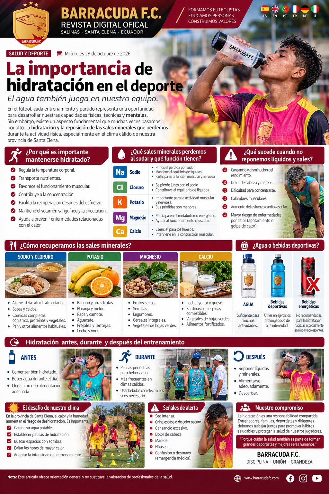

Na · SodioEquilibrio de líquidos
Cl · CloruroEquilibrio de líquidos
K · PotasioFunción muscular
Mg / CaMetabolismo y huesos
Nota educativa: este contenido es informativo y no reemplaza una evaluación médica o nutricional individual. Se recomienda revisión técnica antes de publicar.